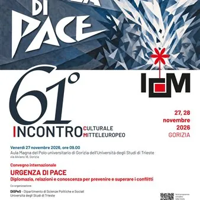

da ven 27 nov a sab 28 nov · dalle 09:00
61° Incontro Culturale Mitteleuropeo - Urgenza di Pace
ll 61° Incontro Culturale Mitteleuropeo propone due giornate di eventi a Gorizia, che hanno come momento centrale il Convegno internazionale "URGENZA DI PACE. INFO: https://www.kadmos.info/61-incontro-culturale-mitteleuropeo/
 Indicazioni
Indicazioni
- Costi e prenotazioni
- Costo non indicato · Prenotazione non indicata
- Programma
- Programma da verificare. Apri la fonte ufficiale per orari e possibili aggiornamenti.
- In caso di maltempo
- Nessuna indicazione specifica pubblicata.
- Note
- Acquisito automaticamente dalla fonte.
L’EVENTO
Descrizione completa
ll 61° Incontro Culturale Mitteleuropeo propone due giornate di eventi a Gorizia, che hanno come momento centrale il Convegno internazionale "URGENZA DI PACE. Diplomazia, relazioni e conoscenza per prevenire e superare i conflitti": una riflessione pubblica sulla mediazione, sulla diplomazia e sulla costruzione della pace. Un confronto sul ruolo delle relazioni, dell’ascolto, della memoria e della conoscenza nel prevenire e trasformare i conflitti.
A coronare l'Incontro una passeggiata alla scoperta dei simboli della Gorizia mitteleuropea, la presentazione dell’attività editoriale e culturale dell'ICM e due momenti artistici: il poema in prosa Scarpone della pace di Claudia Contin Arlecchino e il concerto pianistico di chiusura di Letizia Michielon, con le ultime tre sonate beethoveniane.
PROGRAMMA: Venerdì 27 novembre 2026, ore 09.00
Aula Magna del Polo universitario di Gorizia - via Alviano 18, Gorizia
"URGENZA DI PACE.
Diplomazia, relazioni e conoscenza per prevenire e superare i conflitti"
Convegno internazionale
Ingresso libero: il convegno è aperto al pubblico e alle scuole
Venerdì 27 novembre 2026, ore 18.00
Sala incontro di Borgo San Rocco - via Veniero 1, Gorizia
Scarpone della Pace. Equilibrismi dell’anima
Spettacolo teatrale di e con Claudia Contin Arlecchino
Ingresso libero. Si consiglia la prenotazione a info@icmgorizia.it
Sabato 28 novembre 2026, ore 09.30 - 12.00
Ritrovo davanti all'Hotel Entourage - piazza Sant'Antonio 2, Gorizia
Dalla Principesca Contea all’Impero
Passeggiata transfrontaliera con lo storico Vanni Feresin
Prenotazione obbligatoria fino a esaurimento posti a info@icmgorizia.it
Sabato 28 novembre 2026, ore 14.30
Salone d’Onore Carlo X dell’Hotel Entourage - piazza Sant’Antonio 2, Gorizia
L'Istituto in cantiere
Presentazione dei progetti e delle recenti pubblicazioni ICM
Ingresso libero
Sabato 28 novembre 2026, ore 20.00
Palazzo Lantieri, piazza Sant’Antonio 6, Gorizia
Le ultime tre sonate di Beethoven
Concerto per pianoforte solo di Letizia Michielon
INFO: https://www.kadmos.info/61-incontro-culturale-mitteleuropeo/
IL PROGRAMMA
Programma e orari
Appuntamenti raccolti dalle fonti elencate. Dove manca un orario, non è ancora disponibile in questa scheda.
Programma pubblicato
- Dal 2026-11-27 al 2026-11-28
INFORMAZIONI UTILI
Prima di partire
- Controllare la fonte prima di partire.
ORGANIZZAZIONE